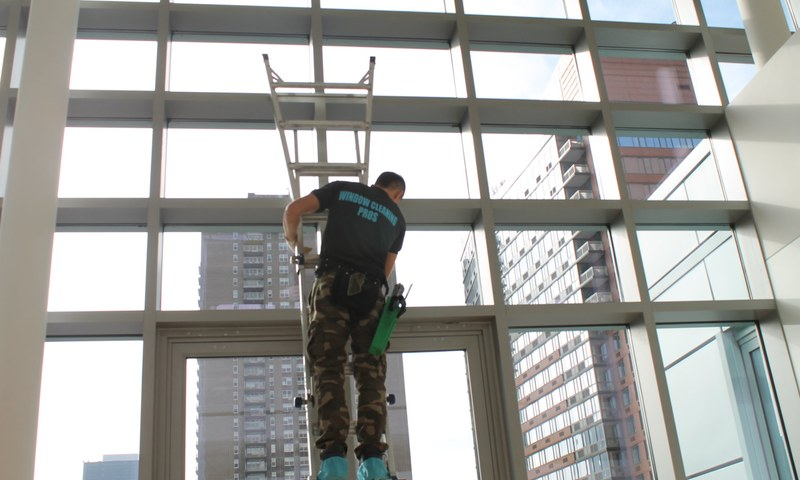

Professional, streak-free window cleaning for houses, townhouses, condos, and apartments across Brooklyn and New York City. Trusted by thousands of homeowners since 2002.
Your home deserves to look its best — and nothing makes a bigger impression than sparkling clean windows. Our residential window cleaning team uses professional-grade squeegees, eco-friendly solutions, and meticulous technique to deliver a streak-free finish on every pane, inside and out.
Whether you own a stately brownstone, a high-floor condo, or a multi-unit apartment building, we have the tools and experience to handle any residential project. We work around your schedule and always leave your home exactly as we found it.

Simple, transparent, and professional every step of the way.
Call or request online. We provide a free, no-obligation estimate.
Our tech surveys your windows and notes any special requirements.
Squeegee technique and eco-safe solution — inside, outside, screens and all.
We inspect every pane before we leave to guarantee perfection.
Everything you need for a professional, worry-free experience from start to finish.
Full cleaning of all window surfaces — frames, sills, tracks, and glass — both inside and out.
Biodegradable, non-toxic cleaning products that are safe for your family, pets, and the planet.
One-time deep clean or recurring service — weekly, bi-weekly, monthly. We work around your life.
Licensed, bonded, and fully insured for complete peace of mind on every visit to your home.
Not 100% happy? We come back and make it right — no questions asked, no extra charge.
We clean more than just glass — screens, window tracks, and sills get the same attention to detail.